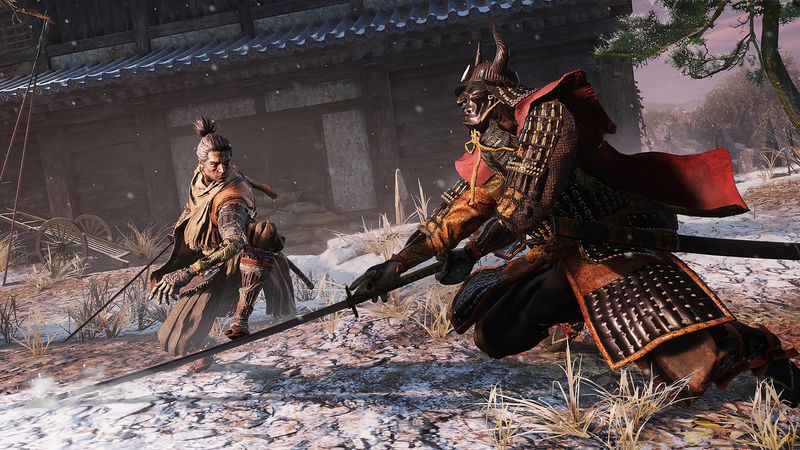
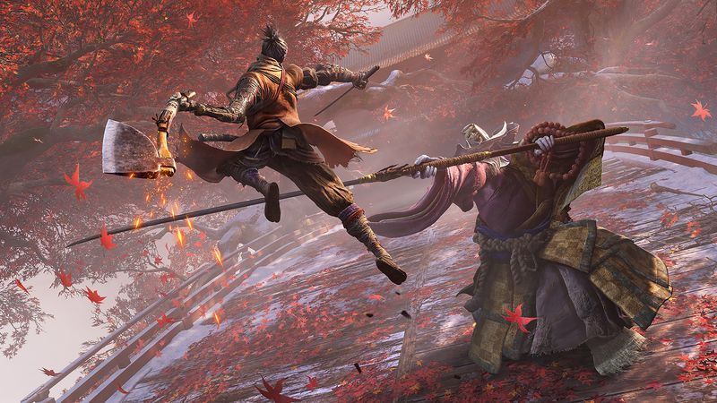

The thirty-second version
Learn the rhythm or leave the mountain.
The good news is our reflexes were bad before Sekiro came out, so there's no downgrade.
Sekiro is the tightest thing FromSoftware has ever made, and also the one most likely to end your relationship with FromSoftware. It's a rhythm game about a sword fight. Once you get it, nothing else feels like it. Getting there takes a lot of dying, and there's no summon, no coop, no build variety to help you avoid the wall you're currently sitting in front of.
Okay, what is this thing?
You are a shinobi called Wolf. You have a katana, a grappling hook, and a very specific problem with a horse-mounted knight who wants to end you in the first hour. You will not level up your way past him. You will not summon a friend. You will parry his sword clashes with L1, and when you finally do, the sound the game makes is one of the great sounds in video games.
Deflection replaces the dodge roll. Posture replaces the health bar as the thing you're actually attacking. Bosses are duels, and duels are conversations, and the conversation goes clang clang clang clang thrust until one of you is dead. The rest is grappling around beautiful mountain temples, finding prosthetic tools, and eventually beating a man who is essentially the concept of samurai.


Why it escaped the group chat
- Combat is built around deflection and posture rather than dodge-and-hit.
- There's no multiplayer of any kind — you die alone, in the classic FromSoftware manner.
- The grappling hook is the mobility system, and it makes every arena feel like a jungle gym.
Three dads enter
01
Dad Who Skipped the Tutorial
The wall I could not climb, no matter how nicely the other two asked.
I met Gyoubu Oniwa, the horseback samurai in the first area, and lost roughly six times in a row. Then I put it down for eight months. I came back one Sunday afternoon out of guilt, beat Gyoubu on the second try, and then quit again immediately, satisfied. I call that a win. It kind of is.
02
The Descent Guy
The purest FromSoft has ever gone.
I clocked the rhythm-game bones about ninety minutes in and never played anything else for a month. I've read the Mikiri counter frame data. I can explain when to Mortal Blade, when to firecracker, and when to just shut up and deflect for eleven straight seconds. I beat Isshin in my lunch break and told everyone at work about it. Nobody cared. I didn't care that they didn't care.
03
Normal-ish Dad
Beautiful, brutal, and honestly a big ask.
This isn't a game you can dip in and out of. Sessions need to be long enough that the fingers wake up. Bosses need runbacks. Runbacks eat evenings. I got about two-thirds of the way through and shelved it during a busy work week, and every time I came back I had to reteach my hands the parry timing all over again. Beautiful game. Not one for the two-hour weekday window.
Who it is for and what to watch
Invite these people
- Anyone who wanted Bloodborne but with a sword and no guns
- People who like being humbled by pattern recognition
- Dads whose kids sleep through the night
Dad caveats
- There is genuinely no easy mode, and no summon rescue
- The story is oblique in a way even by FromSoftware standards
- You will absolutely spend an evening losing to a large old man who is technically your dad
Receipts
Two of us finished it on PC, one after roughly forty deaths to Genichiro alone; the third made it about two-thirds through before life took over. Details checked against the game's official Steam listing.